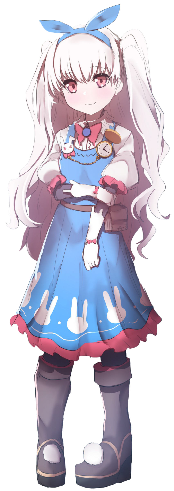

Her full name is Helena Petrovna Blavatsky. A female occultist of the 19th Century, a founder of theosophy. One of the leaders in modern occultism. She is popularly known as Madame Blavatsky. A prodigious magus born as a mutation. Although she married a Russian aristocrat at a young age, she would immediately elope to live gorgeously in the magic world.
Is the Assassin-class Servant of Reika Rikudou of the Black Faction in the Great Holy Grail War of Fate/Apocrypha. Originally summoned by Hyouma Sagara, Reika becomes her Master shortly after. She is one of the Servants of Ritsuka Fujimaru of the Grand Orders conflicts of Fate/Grand Order. Assassin's True Name is Jack the Ripper, the Legendary Serial Killer.


Caster's True Name is "Nursery Rhyme" , the embodiment of Alice's feelings on the subject projected onto a Reality Marble, Nursery Rhyme, to create a virtual-servant. It is not a hero in the traditional sense, but the general term for any picture book that managed to manifest itself into a corporeal existence. It is a genre deeply loved by the children of England that came into being as a reaction to the half-voiced dreams of the young.